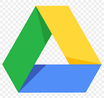

Backup of an Android device is configured by selecting the items to be backed up, then configuring a Google One account. In addition, all applications and associated data are automatically backed up to the Google One account.
Google Drive/GoogleOne
Details of the Google One plan and configuration can be found on the Windows Backup Operations page.
To view backup details online:
- https://one.google.com
- Backup: Motorola moto g pure -> View
A summary can also be found on My Drive.
- Storage
- Backups
- Double-click the name of the backup for a summary.
Android Backup Configuration
Settings -> Google -> Backup:
- Backup by Google One: On
- Photos & videos: Back up photos & videos from this device to your Google Account: On
- Google Account data: All items On except for Google News and Google TV.
Backups are performed automatically but can be run on demand via Settings -> Google -> Backup -> Back up now
 Links
Links